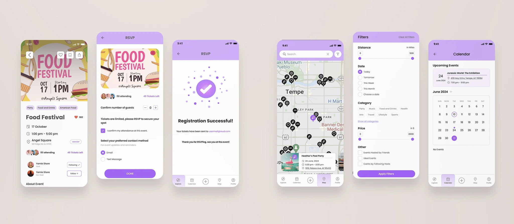
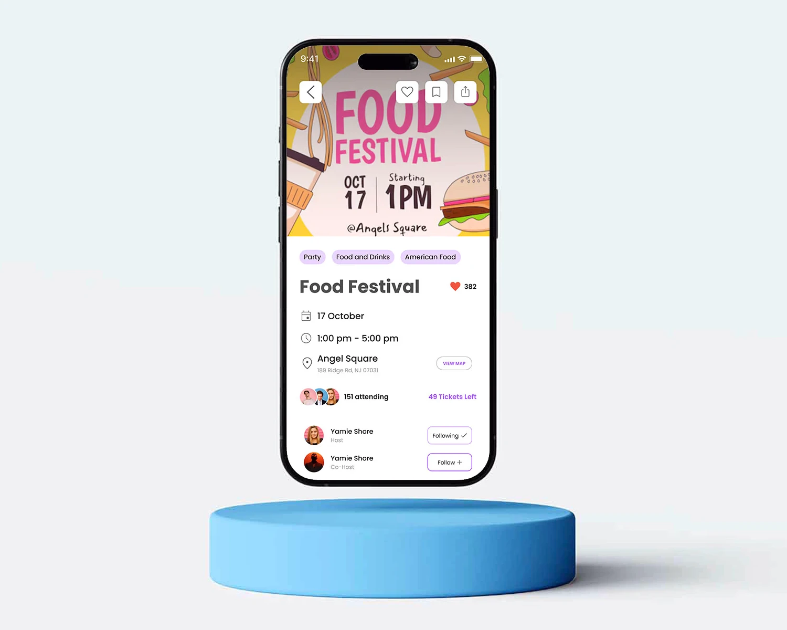
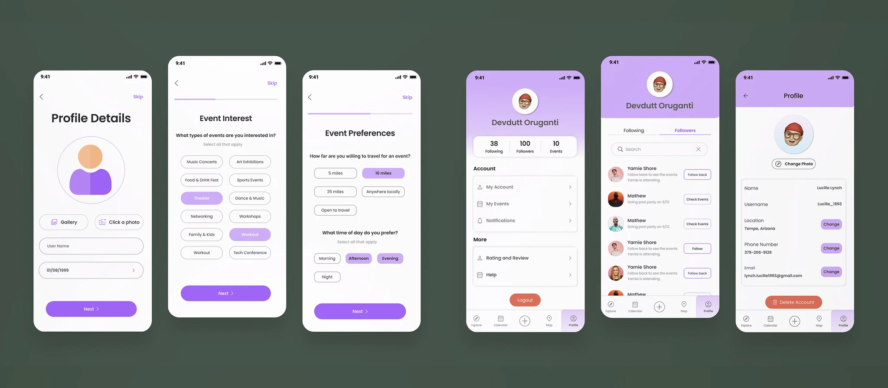

WUD! — Reimagining the Social Event Lifecycle
Solo — full ownership
I owned every stage independently — from designing the research instruments and running all 5 qualitative interviews through to defining the IA, running two rounds of usability testing, and delivering all final hi-fi screens. Every design decision on this page was mine.
Apps consolidated — Eventbrite, WhatsApp, Google Calendar, and Instagram replaced by a single platform
Event creation completion rate — after redesigning the form as a progressive disclosure flow
Core friction points eliminated across the full event lifecycle: discovery, coordination, and identity

Event planning is social. The tools people use to plan events aren't. Users were already juggling Eventbrite for discovery, WhatsApp for coordination, Google Calendar for tracking, and Instagram for social proof — and none of these talked to each other. WUD! was the connective tissue that was missing.
The Brief I Was Given — and the One I Chose to Answer
Design an intuitive event app that simplifies discovery, planning, and participation. That brief had an assumption baked in — that discovery was the problem. Before designing anything, I wanted to verify whether that was actually true.
The brief also didn't specify whether "planning" meant the host's experience or the attendee's — a distinction that turned out to be central to the entire design.
"Planning" unspecified — host vs. attendee perspective unclear. Assumed discovery was the core problem.
Is discovery actually the bottleneck? Who is this app primarily for — the person hosting or the person attending?
Run research before accepting the brief. Design for dual persona — same account, distinct host and attendee modes.
The biggest barrier was discoverability. Research confirmed this was only partially true.
Navigating the "Obvious" Problem
My initial assumption was that discoverability was the core problem. I designed a mixed-methods study specifically to challenge that assumption — because designing for the wrong problem at full fidelity is expensive.
Naturalistic navigation
Shadowed 10 users without prompting. Behavior in context — not in a test scenario — revealed real drop-off points, including that users frequently opened other apps to coordinate while browsing events.
Market gap analysis
Eventbrite and Meetup had solved centralized discovery reasonably well. Everything that happens after finding an event — coordination, social validation, post-event identity — was consistently failing across all 7 platforms.
The emotional dimension
In-depth sessions focused on coordination frustrations. These surfaced the anxiety dimension — the social risk of attending alone — that a survey alone wouldn't have captured.
Pattern validation
Validated interview findings at scale to distinguish personal frustrations from systemic patterns shared across the user base.
Users in natural navigation contexts, without prompting.
Including Eventbrite and Meetup.
To validate qualitative findings at scale.
What the Data Actually Said
wanted better personalisation — felt buried under irrelevant suggestions
found coordinating with friends difficult; regularly forced to WhatsApp off-platform
wanted to showcase event history socially — a need no platform was addressing
Discovery was real but solvable. Coordination was where the experience truly broke down — and it was being almost entirely ignored by competitors. The 80% identity result was the biggest surprise: users weren't just trying to attend events. They were trying to be seen as people who do interesting things.
Most users coordinated via WhatsApp. The social risk of attending alone caused event abandonment.
The app isn't failing at finding events — it's failing at the social work required to actually attend them.
Surface who from your network is attending directly on the event detail page — no separate feature needed.
Of users explicitly wanted better personalisation.
Found coordinating with friends difficult; regularly went off-platform.
Wanted to showcase event history socially — no platform addressed this.
From "Better Search" to a Human Problem
"Design an intuitive event app that simplifies discovery, planning, and participation."
"How might we reduce the friction of group coordination and social validation in event planning, so that users never need to leave the app to do the social work that makes events actually happen?"
This reframe shifted the entire design target. From solo discovery to group participation. From finding events to making attendance feel socially safe and practically frictionless. The three design pillars — personalised discovery, social coordination, and identity — came directly from this reframe.
The Three Principles I Designed Against
Before touching screens, I defined three principles grounded directly in the research — and one structural constraint that shaped the entire IA: the same user could be both attendee and host simultaneously. The design had to support both modes without requiring separate apps or accounts.
1
Keep the group together.
Any coordination that happens off-platform is a product failure. The app needs to make group planning feel less chaotic than a group chat.
2
Earn relevance, don't assume it.
Surfacing irrelevant events erodes trust faster than having no recommendations at all. Personalization must feel intentional — collected upfront, not inferred silently.
3
Let users build an identity.
Social proof isn't vanity — it's how people decide who to trust. The profile isn't an afterthought; it's a social signal and a record of lived experience.
Every design decision was tested against one question: does this reduce the need to go off-platform?
Same account, but two distinct modes — Attendee and Host. This structural decision shaped the entire IA.
Navigation as a Design Statement
Social + geo
Social invitations (warm) above neighbourhood events (cold).
Committed
Replaces Google Calendar for committed events.
Host entry
Centre tab — hosting is first-class, never buried.
Geo discovery
Event pins by category. Preview without leaving the map.
Identity
Social footprint, tickets, bookmarks, and settings.
70% found coordination difficult. Creating events felt like a power-user feature in competitor apps.
Hosting needs to feel as accessible as browsing — not 3 taps deep in a settings menu.
Place "Create" as the center tab — a permanent top-level CTA at the same level as browsing.
What Failed, and What Changed
Two prototype rounds, 10 users each. Three core tasks: discover an event, coordinate attendance with friends, create and manage as a host.
The initial RSVP tracking UI used subtle status indicators that 4 of 10 users regularly misread. The design was visually clean. It was functionally ambiguous — users couldn't tell if a friend had confirmed or was still pending without reading carefully.
Redesigned with distinct color, iconography, and explicit label — status readable at a glance, not deduced.
The first pass at animations was too aggressive. Users described the interface as "busy" and "distracting." Counterintuitively, the UI was competing with the social content it was meant to surface.
Pulled back animation intensity significantly. The rule I landed on: motion should confirm an action, not announce it.
The creation form was a single long scroll covering 14 fields across image, title, timing, location, social links, capacity, category, co-host, visibility, RSVP settings, dietary restrictions, and cancellation policy. Hosts lost orientation mid-form and abandoned before completing.
Split into a 4-step progressive disclosure flow with a persistent progress indicator. Each step groups related decisions. Step completion improved from 60% to 91%.
Event creation completion — single long scroll
Event creation completion — 4-step progressive disclosure
Low-fi prototype, then high-fi — 10 users each time.
Discover · Coordinate with friends · Create and manage as a host.
The Three Problems, Solved
Earn relevance, don't assume it
Profile Preferences lets users define interests upfront during onboarding — so recommendations are earned rather than guessed. Explore splits into social invitations (warm) above neighbourhood events (cold), prioritizing social context over algorithmic suggestion. Map and Calendar give users additional lenses: spatial discovery and time-based commitment tracking.
Profile Preferences collected upfront — covers event types, travel distance, and preferred time of day.
The filter panel covers 5 dimensions: Distance, Date, Category, Price, and Social filters — each mapping directly to a gap in the competitor audit. Existing platforms offered at most 2 of these filters.
Answering "is anyone I know going?" without a group chat
Event Details surfaces network data directly: attendee avatars, follow-status badges, and tickets remaining. The RSVP flow is three steps and ends with a clear confirmation state — reinforcing that the social coordination work is done. For hosts, the attendee management screen uses checkbox-based bulk removal rather than swipe-to-delete, which tested significantly better for lists over 10 people.
Surfacing network context on the event detail page itself eliminated the primary reason users abandoned events mid-planning.

The profile as a social record, not an afterthought
Profile displays Following, Followers, and Events Attended as equal social stats — treating participation as social currency on par with relationships. My Events uses three tabs: Event Tickets (QR codes for physical check-in), Saved Events (bookmarked but not registered), and Hosted Events (with inline editing). The Following list appends event context to each connection — turning it into a live feed of what people you know are doing.
80% of users wanted event history as social identity. No existing platform was designing for this need.

What I'd Do Differently
Go deeper on group consensus dynamics
The coordination features I designed addressed the problem at the interaction level. Looking back, the hardest part of planning with friends isn't tracking RSVPs — it's reaching consensus on what to attend in the first place. A vote-on-options or shared shortlisting tool would have targeted that friction more directly. I'd run a dedicated co-design session around group decision-making before finalizing the coordination feature set.
Instrument the prototype earlier
Usability testing captured task completion rates, but I didn't have metrics on where users slowed down within a flow. That behavioral data would have identified micro-friction before the final round. Even simple time-on-task logging per step would have surfaced bottlenecks in round one.
Give the host experience equal research weight
Most of my interview participants were event attendees. With more host-side research, the Create Event flow might have been structured differently — particularly the visibility and capacity settings, which hosts found most difficult to configure in testing. The host experience was deprioritized in the research phase, and it shows in places.
Host-side experience deprioritized — designed late and tested in only one round.
Functional and emotional problems require different design responses. Don't mistake one for the other.